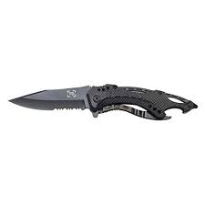

One of the coolest tactical knives out there. Cuts through all materials like a knife with butter. A limited editionblack handeled knife consisting of razor sharp edges. This beautiful design allows free use without the chance of hurting yourself. Our reliable tools and products have always amazed out customers. This product is inspired by my trips through the wilderness. Helping me cut vines and other obsticales, journeying through the jungle was easy. Tha tisn't the only use of this product. It can also be used at home to cut down any hazardous branches, or help defend yourself.
My Experience with Tactical Gear has beengreat. I often have relied on these products including this handy knife. Throw aside your other butterfly knives or pocet knives. Tactical Gear is the way to go.